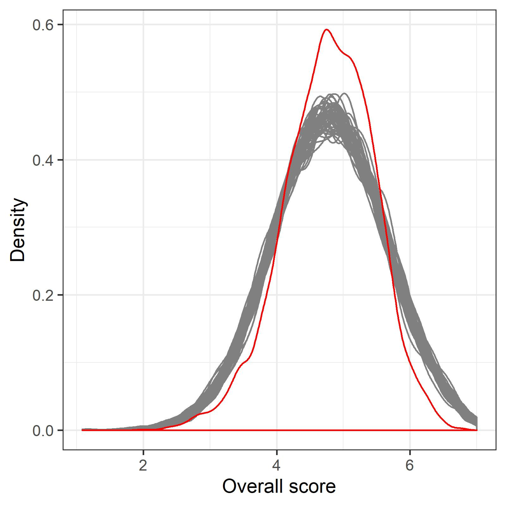

The gender disparity in research funding
There is a large gender disparity in the number of research grants awarded in Australia. For years men have won more funding than women. This disparity in success is driven by a disparity in applications, as women apply far less often. Success rates for men and women are relatively close, so policies to reduce the gender disparity in funding should focus on encouraging more applications from women. The idea of allowing fewer applications from men using quotas has been raised.
The figures below show the application numbers for the Australian Research Council (ARC), with an average gap between men and women of around 8,000 applications per year and around 2,650 awards.1

Funding peer review
Just in case you are unfamiliar with how research grants are awarded, researchers spend a long time preparing detailed applications, which are then peer reviewed, given a score and ranked. Those ranked high enough win funding, and those below the funding line get nothing. There are lots of different schemes, with some funding projects and some funding people. Most funding schemes work on an annual basis. It’s a tough system and success rates have been falling for years, as shown by the graph below.
Distribution of overall scores
The plot below shows the distribution of original overall NHMRC scores and fifty of my simulations (see below for technical details). My simulations do not match the shape of the original scores, but I am not greatly concerned as I think I capture the broad shape of the scores. The great advantage of using simulations is that we are in complete control, and can change any aspect.

x
A success rate of around 60%.
Techinical details of the simulations
References